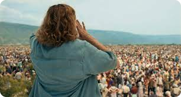

La voix d’Aida : Certaines souffrances connaissent pas de fin.
27 ans se sont écoulés, mais les blessures, les traumatismes et les souffrances sont toujours présentes au sein du peuple bosniaque. Jasmila Zbanic, réalisatrice née à Sarajevo en Bosnie-Herzégovine, nous raconte l’histoire poignante de ce pays et de son peuple à travers plusieurs films. Elle est l’une des uniques femmes à avoir réalisé des œuvres cinématographiques sur la guerre, dans le but de donner sa vision féminine sur le passé de ce pays meurtri par les armées serbes.
Ses films, tels que le plus récent, La voix d’Aida, sortie en 2021, sont réalisés dans le but de faire connaître la guerre de 1992-1995, ainsi que le génocide en Bosnie-Herzégovine, mais tout particulièrement le vécu des femmes à cette période. En effet, Jasmila Zbanic a vécu la tragique période de son pays, et les blessures et traumatismes qu’on engendrés les milices serbes aux cinquante mille femmes bosniennes devait être mis en lumière selon la réalisatrice.
Un hommage à travers un film
Dans le film La voix d’Aida, Jasmila relate le génocide de Srebrenica, qui a fait huit mille victimes en trois jours en juillet 1995, faisant 27 ans plus tard, un traumatisme toujours aussi violent. Comme le génocide de Srebrenica a fait 8 300 victimes, l’issue de La voix d’Aida était prévisible. En juillet 1995, des milliers d’habitants de Srebrenica fuient auprès des Casques Bleus après que la ville soit envahie par l’armée serbe.

De professeure d’anglais, à tradutrice pour l’ONU
Interprétée par Jasna Durcic, Aida, professeure d’anglais, qui devient traductrice pour l’ONU, se voit impuissante face aux actes des milices serbes. La jeune femme ayant des informations confidentielles, s’inquiète pour son mari et ses deux fils qu’elle souhaite protéger plus que tout. Entre les traductions à faire, essayer de faire entrer sa famille dans un hangar, tout en se cachant des caméras, Aida est certaine que le pire est inévitable, tel que la mort de l’un de ses fils. Quelques années plus tard, celle-ci retourne à Srebrenica, en espérant retrouver son ancien poste et son appartement.